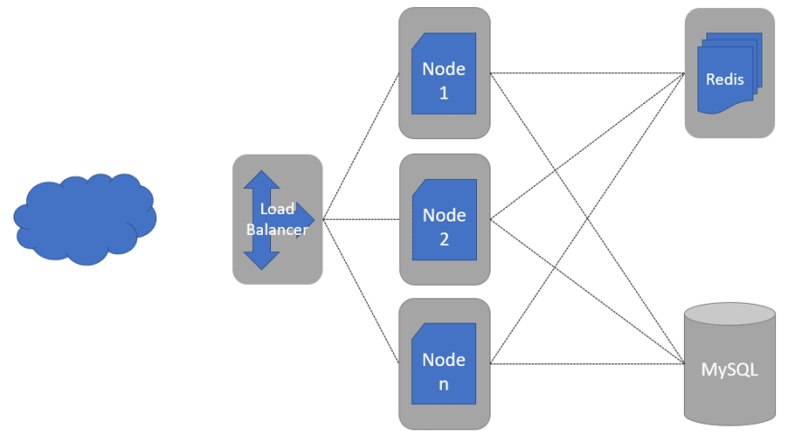
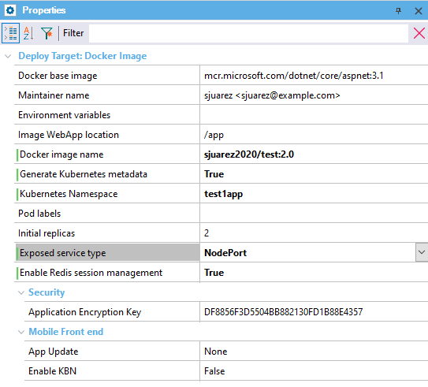
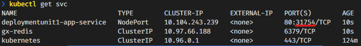

Kubernetes has become the de facto standard Docker containers orchestrator. It is so popular and such a great solution for application deployment that all the major cloud providers have a solution for deploying a Kubernetes cluster.
For more information about Kubernetes, read What is Kubernetes. Kubernetes is based on a metadata file that describes the desired state of an application. This state is declared in a YAML file. GeneXus creates this YAML file based on your application needs. Here's what you need to know. ArchitectureBelow is a little diagram of what we want to achieve.
 You can see there's a Load Balancer redirecting your traffic load to the nodes of your app. These nodes are all exactly the same; it is the same Docker Image of your app, initialized n times. By default, GeneXus generates 2 instances, but you can change that in the deployment properties. Also, if you wish so, GeneXus deploys another container with a Redis server. This allows the application to save the session on that Redis server, so if you don't have server affinity or if one of your nodes (or pods) goes down, your clients can reach a new node without losing their session. Keep in mind there's no database container deployed here. You will have to manage the database yourself. Every cloud provider has good scalable solutions for relational databases. GeneXus DeploymentLike any other deployment in GeneXus, the starting point is the Deployment Unit object, and since Kubernetes is based on Docker containers you need to create the Docker Image of your application first. So, you need to select Docker Image as your deployment target in the Application Deployment tool. There are a few properties specific for Kubernetes under the Docker Image deployment target.
 Also, keep in mind that if you use blob files, images, or audios, they must be stored in a Storage Provider solution. Since at any given time any node of the cluster can go down, you cannot rely on the local File System of your containers. More information at Load balancing considerations. Let's do this!To deploy an application on a Kubernetes cluster, follow the steps below:
Here's what happens when you hit the Deploy button. The first two steps are regular deployment application, there's nothing special here. The deployment engine generates the gxdproj file with the objects that need to be deployed and then a war or zip file gets created with the files involved with those objects. After that, the engine creates a Dockerfile and uses it to build the Docker Image. It will also generate the Kubernetes metadata file for your app, another one for the Redis service, and another one for the Namespace creation. Why three files if it could all be appended into a single file? Because most certainly your app metadata file will evolve in the future and you will eventually apply many versions of that file. The Redis and the Namespace files will be applied only once. Generating Kubernetes metadata file Kubernetes metadata file succesfully generated at 'C:\Models\TestDeploy\TestDeploy\NetCoreSQLServer003\Deploy\DOCKER\context\K8s-DeploymentUnit1-App.yaml' Make sure you push the sjuarez2020/test:2.0 Docker image to a reachable Docker registry (eg. 'docker push sjuarez2020/test:2.0') 7. Tag and then Push (2) the image to a Docker Registry. If you have set the right values under Docker image name (1), you should simply run the suggested command; in this case: docker push sjuarez2020/test:2.0 8. You're all set to spin up the cluster. Open a CMD window and go where the metadata file was generated (also described in the Output Window) and execute the following commands: >kubectl apply -f K8s-test1app-Namespace.yaml namespace/test1app created >kubectl apply -f K8s-test1app-Redis.yaml service/gx-redis-svc created deployment.apps/gx-redis-app created >kubectl apply -f K8s-DeploymentUnit1-App.yaml service/deploymentunit1-svc created deployment.apps/deploymentunit1-app created Keep in mind DeploymentUni1 is the name of the selected Deployment Unit, so it could be different in your case; and "test1app" is the Kubernetes namespace configured in the Deployment Unit options (see the image above in this document). It's useful to have the Kubernetes Dashboard (3) installed, so you can check if the deployment has been done successfully, or if any error has been thrown and needs your attention. 9. Test the app. In order to access an object of your application, you need to know where it has been exposed (remember to add the -n flag if you added a custom namespace): >kubectl get svc -n test1appThis will show every service in your cluster. Pay attention to the one named after your Deployment Unit followed by app-service.  This tells you that your service is being exposed at localhost, port 31754. So, going to htttp://localhost:31754 in your browser will get you there. Keep in mind you also need to add the specific object you want to reach. It could be adding just the name of the object plus the .aspx extension for .NET Core, or servlet/packagename for Java. http://localhost:31754/sessiontester.aspx http://localhost:30118/servlet/com.k8stest.sessiontester AvailabilityThis feature is available since GeneXus 16 Upgrade 11. References
Additional information |